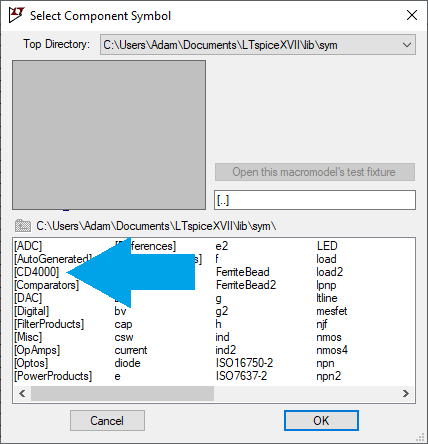
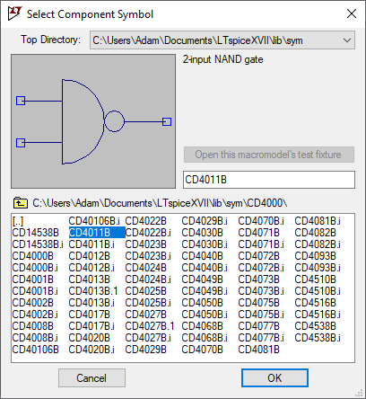
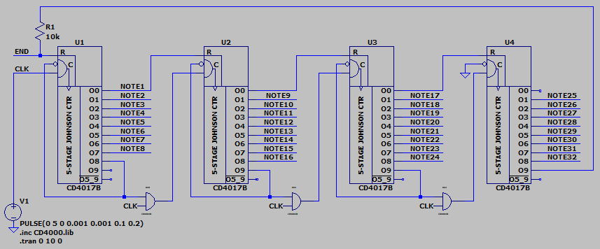

Using CD4000 Series Components in LTspice
This is a duplication of the information found in this video by The Repair Cafe. This information is too valuable to risk losing it due to link rot.
This guide will help you setup LTspice to use the following CD4000 series logic ICs in your simulations:
| Name | Function |
|---|---|
| 4000 | 3-input NOR gate |
| 4001 | 2-input NOR gate |
| 4002 | 4-input NOR gate |
| 4008 | 4-bit binary full adder with fast carry |
| 4011 | 2-input NAND gate |
| 4012 | 4-input NAND gate |
| 4013 | D-type flip-flop, Q & Q outputs, positive-edge trigger, asynchronous set and reset |
| 4017 | Decade counter (5-stage Johnson counter) with 10-output decoder, active HIGH output |
| 4020 | 14-stage binary ripple counter |
| 4022 | Octal counter (4-stage Johnson counter) with 8-output decoder, active HIGH output |
| 4023 | 3-input NAND gate |
| 4024 | 7-stage binary ripple counter |
| 4025 | 3-input NOR gate |
| 4027 | J-K master-slave flip-flop, Q and Q outputs, positive-edge trigger, asynchronous set and reset |
| 4029 | Presettable up/down counter, binary or BCD-decade |
| 4030 | 2-input XOR gate (replaced by 4070) |
| 4040 | 12-stage binary ripple counter |
| 4049 | Inverting buffer |
| 4050 | Non-inverting buffer |
| 4068 | 8-input NAND/AND gate (2 outputs) |
| 4070 | 2-input XOR gate |
| 4071 | 2-input OR gate |
| 4072 | 4-input OR gate |
| 4073 | 3-input AND gate |
| 4075 | 3-input OR gate |
| 4077 | 2-input XNOR gate |
| 4081 | 2-input AND gate |
| 4082 | 4-input AND gate |
| 4093 | 2-input NAND gate, Schmitt-trigger inputs |
| 4510 | Presettable 4-bit BCD up/down counter |
| 4516 | Presettable 4-bit binary up/down counter |
| 4538 | Dual retriggerable precision monostable multivibrator, Q and Q outputs |
| 14538 | Retriggerable monostable multivibrator |
| 40106 | Inverter with Schmitt-trigger inputs |
Instructions
Right click > Save Link As... these two files.
Save CD4000.lib
in (Program Files) > LTC > LTspiceXVII > lib > sub .
Save CD4000.zip,
unzipped, in (Program Files) > LTC > LTspiceXVII > lib > sym .
In your LTspice schematic, add an ".inc CD4000.lib" directive.
In LTspice, the components will be in the CD4000 folder in the component menu.


Below is an example of a cascaded counter that uses the CD4017 counter and CD4081 AND gate. Note the directive in the bottom left.
